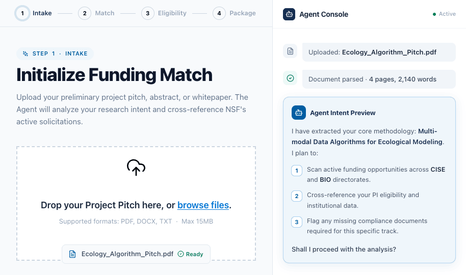
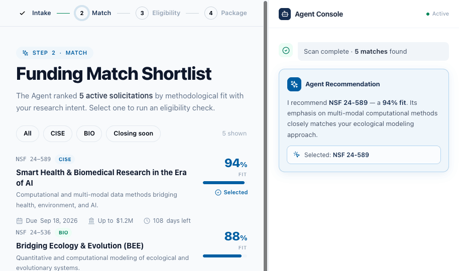
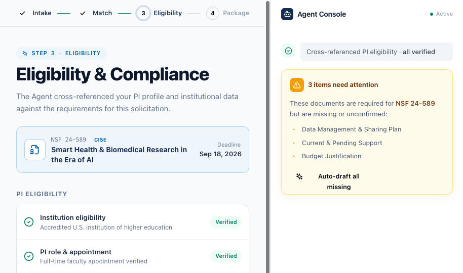
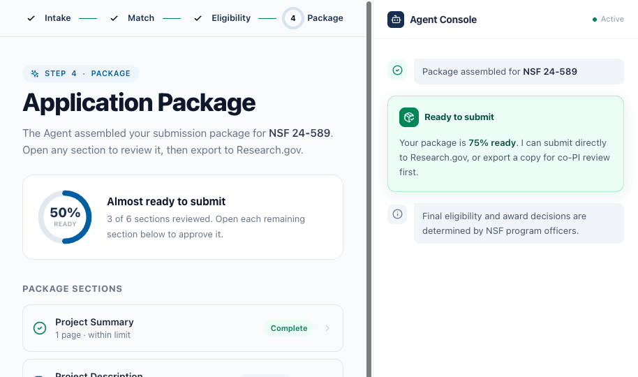

ROLE
Design Engineer • Product Designer
Open to new roles
2026
CASE STUDY 02 — AGENTIC EXPERIENCE
An AI copilot that guides researchers from raw idea to a compliant submission, where the agent does the labor and the researcher stays the accountable decision-maker.
grant-copilot / match
项目HTML/video
稍后放
A live walk through the agent planning, executing, and pausing for human approval.
THE CHALLENGE
Funding research shouldn’t mean fighting the paperwork.
Finding the right opportunity means navigating scattered systems, decoding dense eligibility rules, and racing deadlines - mostly by hand.
01
Scattered across systems
Opportunities live across separate federal portals and mailing lists - none sharing state. Researchers stitch together sources by hand just to see what’s open.
02
Relevance is manual
Thousands of solicitations, no real fit ranking. Finding the few that match your methodology means reading dense PDFs one by one.
03
Eligibility hides on page 40
Up to 30–40% of applications are disqualified on technical eligibility — criteria buried deep in the solicitation, surfaced too late to act on.
The System
A four-step pipeline that makes a complex application legible.
01
Intake
Upload pitch. Agent extracts intent.
I replaced a 15-field search form with a single document upload. The agent reads the applicant’s intent, then outlines the steps it plans to take before it executes, so automation begins with a shared plan, not a black box.

Upload → the agent proposes its plan and asks to proceed.
02
Match
Translating AI output into trust.
Dense model analysis and cross-referenced institutional data become clear, ranked, actionable matches - communicating why each one fits, not just that it does

Ranked matches, each with a fit score and the reason behind it.
03
Eligibility
A human gate at every high-stakes step.
Compliance documents and applicant status are verified with a human review gate at every high-stakes step.

The agent flags what’s missing — you stay the one who verifies.
04
Package
From scattered docs to one package.
Every section is assembled, reviewed, and exported as one submission-ready package.

A live readiness meter — each section approved before the package can export.
The Signature Design Decision
Review before you Confirm
The first build had a single “Confirm” button that asked applicants to certify a compliance document they’d never seen. One critique named the problem precisely: “Confirm is a terminal verb - it implies you’ve already reviewed.” The fix wasn’t a label change. It was a structural rethink.
Before — v1 · One-click confirm
Current & Pending Support · Action Needed
Confirm
The user is asked to certify a disclosure without seeing its contents. One click marks it “Ready.” Nothing to inspect. Nothing to dispute. The mental model: trust us, it’s fine.
What goes wrong
An applicant certifies that an award is still “Pending” — but it was funded two months ago. The reviewer flags the misrepresentation. The submission is voided.
After — v2 · Review → Confirm loop
grant-copilot / review
The compiled disclosure is visible before any decision. Confirm & attach is irreversible — it lives inside the drawer so the verb is honest. Request changes gives disagreement a first-class, low-friction path.
HOW IT WAS BUILT
Designed and shipped with an AI co-pilot.
This wasn’t just a design about AI — it was designed with AI. I ran an AI-assisted design-engineering workflow end to end, from system architecture to a coded, interactive prototype.
01
Figma
Strategic Blueprinting
Architected an AI-native design system and accessible component tokens - structured deliberately so each component was directly consumable by an AI coding agent.
→
02
CLAUDe
Prompt-Driven Prototyping
Fed structural parameters and design intent into an AI co-pilot to rapidly translate static design into a functional HTML/React front end - real components, real state.
→
03
the roi
10× Faster Iteration
Tested real interactive states and edge cases directly in the browser, collapsing the concept-to-delivery loop from weeks to days.
OUTCOMES & TAKEAWAYS
On high-accountability products, the best design decision was adding a step, not removing one.
impact
A fragmented, multi-portal ordeal became a single guided pipeline where an AI agent does the labor and the user keeps the decisions with zero blind certifications by design.
Process
I mapped the real workflow before touching UI, iterated through a one-click first draft, caught its trust gap in critique, and rebuilt around a Review → Confirm loop - later systematized into one reusable component.
What I learned
Owning both the design system and the coded prototype let me design for an AI agent and partner with one to build - proof that hard constraints don’t limit good design, they tell it exactly where to put the human.